|
INTRODUCTION
HISTORY THROUGH
COMICS
INFORMATION
ALLIES
VILLAINS
CARTOON
MOVIES
PHOTO GALLERY
VIDEO GAME
AS A WHOLE |
The
Fantastic Four
| The story takes place some ten
years in the past where Reed Richards and Benjamin Grimm are college
students and best friends. Reed is embarking on a joint life-long
experiment with Victor von Doom to harness the power of Colossus. |
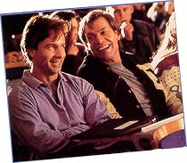 |
|
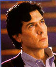 |
Colossus is a mysterious energy
field which comes close to the Earth every once in a while. Doom's
calculations worry Reed but nevertheless, they agree to perform the
experiment that night. |
| Reed and Ben live in a boarding
house which is owned by a certain Mrs Storm who has two children named
Susan and Johnny. Susan, naturally, has a crush on Reed Richards and
all four are good friends. |
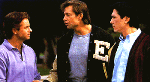 |
|
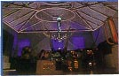 |
That evening, Reed and Doom
prepare their machine to harness the power of Collosus having created
a machine in a top floor attic. |
| Reed queries Doom's calculations
again but it is too late. Collosus is here! Reed raises the antenna
which begins to absorb Collossus but they find that their machine
can't handle that amount of energy is on the verge of overload.
Sensing the danger, Reed leaps to safety, crying out to Doom to do the
same. Doom refuses and frantically tries to control the overload. |
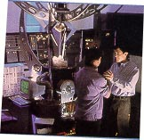 |
|
 |
Meanwhile, outside, Ben Grimm
and a whole host of other students watch the phenomonen that is
Collosus up in the night sky. Ben sees flames over where Reed's
experiment is taking place in the top floor of the house. Worried, Ben
races to aid Reed. Back at the experiment, the machine explodes,
sending out waves of powerful energy which electocute and burn Doom.
Ben arrives and manages to push Doom out of harm's way but it seems
that is too late. Doom is horrificaly disfigured.Ben and Reed rush
Doom to the hospital but later find that it was too late. Doom dies...
or so it would seem. Two men, recognising the potential of Doom's
intelligence, kidnap the nearly dead man's body and promise to help
him. |
|
We are taken to present day where Reed is now
a successful scientist working at the Baxter building. He and Ben have
remained good friends and it is here that they both meet Alicia
Masters. Ben is taken aback by her beauty and the feeling is more than
mutual. A mysterious being known only as the Jeweller also spies the
beauty.
Reed is at the point where he is ready to
once again attempt to harness the power of Colossus with the use of a
giant diamond. |
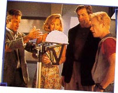 |
|
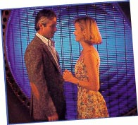 |
This time, Reed decides to
travel into space with Ben as his pilot but they are two short of a
crew. Ben, against Reed's wishes, enlists the help of Susan and Johnny
Storm to complete the crew.Doom finds out about the experiment and
sends two of his agents out to sabotage it but the Jeweller beats them
to it by stealing the giant diamond and replacing it with a fake. |
| During the mission, Reed
attempts to harness the power of Collossus and everything seems to be
fine until the 'diamond' explodes and he realises it was a fake. With
nothing to protect them with, all four of them are bathed in the power
of Collossus. The spaceship overloads and crashes back down to Earth. |
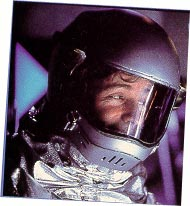 |
|
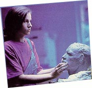 |
Thinking that they have died,
the authorities arrange for a memorial to be erected and for the face
sculptures, the task is given to Alicia Masters. Realising that it is
Ben Grimm who has seemingly been killed, she becomes distraught, right
at the instant that the Jeweller's men kidnap her. |
| In a remote area, Ben Grimm
wonders among the wreckage of the downed spacecraft when he hears
shouts for help in the distance. He races over to find Reed trapped
beneath some debri and frees him. Like Ben, Reed is unscathed.
Suddenly, Johnny comes running towards them and seeing that he is also
fine, he begins to query how they are all unhurt while the ship is in
pieces. It is then that Johnny sneezes and manages to set some
shrubbery alight. They are all amazed and then they hear Susan's voice
but don't see her. She suddenly appears before them, but only half of
her is visible. She panics, stumbles and falls but Reed miraculously
stretches his hand ten feet to catch her before she hits the ground. |
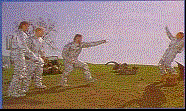 |
|
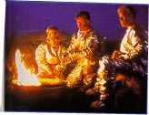 |
That night, the four of them
set-up camp, waiting for the authorities to find them and hoping to
get help on their mysterious new powers. Dr Doom pin-points their
location first and sends out a group of his agents disguised as the
U.S. military. Everyone is surprised when Ben Grimm appears in a rocky
orange hide. |
| All of them are taken and put in
quarantine in an unknown location place which is actually Doom's
castle. There, Dr Doom's scientist performs experiments on the four to
ascertain where they got their powers from. Dr Doom plots to transfer
all their powers to himself. |
|
|
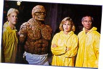 |
Meanwhile, Reed begins to grow
suspicious on why they have been kept so isolated and decides that
they should help themselves. Disguising themselves in radiation suits,
the four of them escape but not before stumbling upon a laboratory.
Here they come face-to-face with their captur - Dr Doom. |
| In an attempt to escape, Dr Doom
sends in his agents to capture the Fantastic Four. The four of them
are still relatively new at using their powers and hold their own
against Doom's men. |
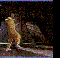 |
|
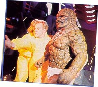 |
As the fight ensues, they find
themselves cornered. Johnny Storm attempts to burn their way out while
the others cover him but it seems that the walls are too strong.
|
|
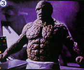 |
Enter the Thing. Realising it is
their only hope for escape, the Thing breaks them out by smashing a
hole through the wall. Defeating most of Doom's men, they all manage
to escape. |
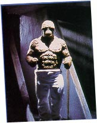 |
|
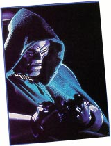 |
Dr Doom returns to his lab,
having left the fighting to his men and is amazed to find that the
Fantastic Four have escaped. Dr Doom puts a plan into motion but to
ensure it will work, he requires the diamond the Jeweller stole.
Meanwhile, our heroes have returned to New York where Reed begins to
look for a cure. he realises that the powers they were given were as
an indirect result of their main weaknesses but still cannot determine
why they can all revert back to human form while Ben remains as the
Thing. |
| Angry wth they way he looks and
the fact that Reed is having trouble finding a cure, the Thing deserts
the team, leaving the Baxter building. On the streets, the Thing is
shunned by the public until he is found by the Jeweller's men. They
are not afraid of him and finding that he has been accepted, the Thing
goes with them. |
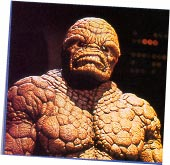 |
|
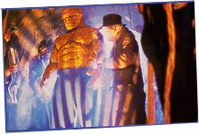 |
The Thing is taken to the
Jewller's underground hideout. There, the Jeweller accepts him into
his group, realising the potential of having the Thing on his side. |
| It is at that moment that Dr
Doom arrives with a number of his own men who are armed. Dr Doom
demands that the jeweller hand over the stolen diamond to him. |
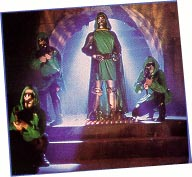 |
|
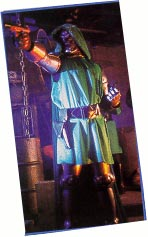 |
The Jeweller refuses and a fight
ensues which is mostly one-sided with most of the Jeweller's men being
killed by the dozen. The Jeweller takes Alicia Masters hostage and
uses her as a shield. Dr Doom isn't interested in her until the Thing
intervenes. |
| Realising that the Thing has
feelings for the girl, Dr Doom takes her hostage and threatens to kill
her. This also allows him to get his hands on the diamond. The Thing,
seeing Alicia in Dr Doom's clutches, get's ready to attack. |
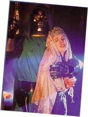 |
|
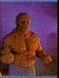 |
Alicia tells the Thing,
realising he is actually Ben Grimm and that he is still alive, that
she loves him. This causes a transformation in the Thing, reverting
him back to Ben Grimm. Now in danger of being killed, Ben escapes.
Upon reaching the surface, Ben Grimm changes back to the Thing but Dr
Doom has escaped by this time. |
| Back at the Baxter building,
Reed has had little luck in finding a cure but they are all now
beginning to accept their powers. Susan Storm even sews up four
costumes for them to all wear, deciding to use their powers to help
mankind. |
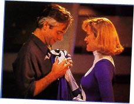 |
|
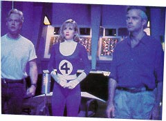 |
Suddenly, the main display
screen comes to life and the visage of Doom appears. Dr Doom gives the
Fantastic Four twelve hours to surrender themselves to him. He warns
them that if they refuse, he will demolish all of New York with his
giant laser gun (!). |
| Reed now knows that Dr Doom is
really his friend, Victor von Doom whom he thought had died ten years
ago. But they are now only three when the Thing returns, telling them
that he is back for good. Reed wants to go alone but they all have a
stake in this. Climbing into the Fantasticar, the four of them set off
for Latveria. |
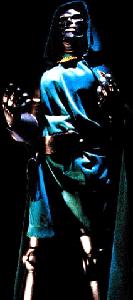 |
|
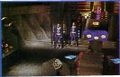 |
Upon arrival, they find that the
castle is deserted. they begin there search which takes them to Dr
Doom's lab. |
| Reed is amazed at the technology
and upon seeing the giant laser, decides to first dismantle it. the
four of them rush over to it but Doom makes his entrance. |
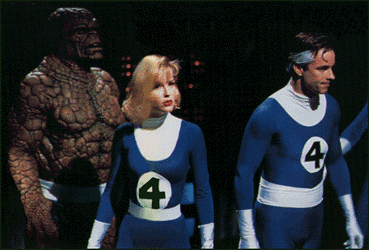 |
|
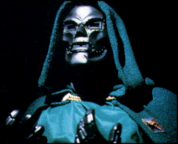 |
Reed tells Doom he knows who he
is and tries to persuade him to give up his mad plan to destroy New
York City. Doom, naturally, refuses. |
| It is then that Doom pulls a
switch and four forcefields drop down from the ceiling, trapping our
heroes. There is an energy field which then begins to siphon off their
powers. Doom's plan is to feed their powers through the giant diamond
and channel it all into himself. |
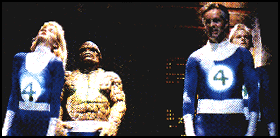 |
|
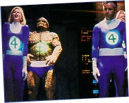 |
While Doom is distracted in
doing this, Reed stretches his foot as far as it will go and manages
to de-activate the force field. free once more, Dr Doom runs, sending
in his men to take care of the Fantastic Four but not before also
activating the laser. A fight with Doom's men ends quickly and reed
races to try and de-activate the laser but it is too late. |
| Meanwhile, the Thing searches
and finds Alicia Masters and frees her from Doom's men. |
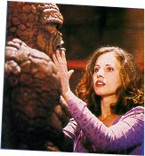 |
|
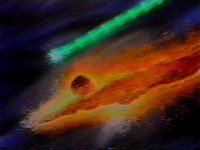 |
Johnny flames on and flies out
after the laser beam, hoping to intercept it before it hits New York.
As the Human Torch he manages to outrun the beam just before it's
about to burn the city to the ground but how can he stop it? |
|
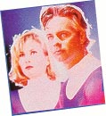 |
Reed and Sue watch Johnny's
progress, hoping he will stop the laser beam in time. But now, there
remains only one more loose end. The final confrontation with Doom.
Reed runs out of the lab to find him. |
|
Usinf his flame power, the Human
Torch creates a shield of fire and blocks the laser beam just outside
New York. Increasing the pressure, the Human Torch manages to knock
the beam of course and extinguish it just in time. |
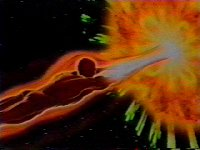 |
|
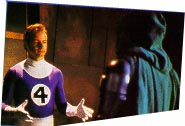 |
Reed finds Doom and the final
fight begins. Reed rains blow after blow on Dr Doom, using his
stretching ability to keep out of Doom's reach and manages to knock
him over the edge of the balcony. Not wanting to kill him, Reed
catches him by the gauntlet and tries to pull him up. Doom has other
ideas and knowing he has lost, dislodges his gauntlet and falls -
seemingly to his death. |
| Sue finds Reed and all of them
leave Doom's castle. Reed pops the question to Sue and they are
married soon afterwards in a ceremony attended by all. |

|